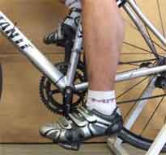
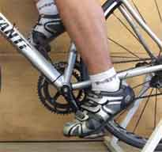
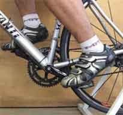
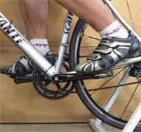

Contents | About | Contact
article 14, issue 04
Kim B. Blair, Guo-Liang Chew, and Mark Cote
October 2, 2007
A test was conducted using a wind-tunnel comparing the aerodynamic drag of a bicyclist when pedaling to when not pedaling.
For individual cycling events such as time trials and the bicycling portion of a triathlon, reducing aerodynamic drag is of the utmost importance. Two methods commonly used to measure the aerodynamic performance of a cyclist include wind-tunnel testing and coast-down tests.
During wind-tunnel testing, the cyclist typically pedals at a relatively low cadence, about 40 rpm, in order to minimize the effect of the rider's movements on the drag measurement apparatus. Data is collected over a sufficiently long time, at least 30 seconds, to average out the effects of the pedal position.
In the absence of a wind-tunnel facility, a cyclist might make use of indirect methods such as coast-down tests. While coasting without pedaling, the cyclist uses a long downhill straight measuring the time over a set distance. By observing the speed of the descent and the gradient of the downhill section, the cyclist can determine drag.
In either case, the cyclist does not pedal in the same way during the aerodynamic test as during competition, where the cyclist would typically pedal at a cadence of 85 - 95 rpm. In a coast-down test, the legs are held in a static position. In the wind-tunnel, the pedaling cadence is about half that of normal racing.
The usefulness of both coast-down and wind-tunnel tests is improved when test results provide the best insight to actual cycling conditions. In order to understand the effect of leg position and cycling cadence on the drag of a cyclist, a short wind-tunnel test was completed to measure the drag of a cyclist with the legs in several static positions, and with the legs spinning at different cadences.
All testing was conducted at the Massachusetts Institute of Technology's Wright Brothers wind-tunnel using a specially-designed bike fixture mounted on the tunnel balance [reference]. The bicycle used during the tests was a standard roadbike with clip-on aero bars. The cyclist was a male member of the MIT Cycling Team, seated on the bike in an aero position. The cyclist wore an aerodynamic helmet, standard cycling jersey, and cycling shorts [notes 1 - 4].
Wind speed during the tests was set at 13.4 m/s, 0 degree yaw angle. Static pressure, dynamic pressure, temperature, humidity, drag force, and side force were measured in the tunnel and all recorded at 1000 Hz. Each test condition was monitored for 30 seconds, with the average and standard deviation calculated for each test point. All drag data was normalized to standard sea level conditions for a nominal wind speed of 13.4 m/s to account for any fluctuation in wind speed during or between tests. Statistical significance of the drag difference for each test condition was evaluated using two-sample z-tests (alpha = 0.05).
The first series of tests measured the drag at static crank positions. Figures 1-4 depict the individual crank positions held by the cyclist for each measurement at 0, 30, 60 and 90 degrees. The crank angle was determined by an electronic inclinometer [note 5].
| 
[Figure 1] 0 Degrees – Crank arms normal to the ground, right crank arm up |

[Figure 2] 30 Degrees – Right crank arm forward, 30 degrees from up position |

[Figure 3] 60 Degrees – Right crank arm forward, 60 degrees from up position |

[Figure 4] 90 Degrees – Right crank arm forward, cranks parallel to the ground |
The second series of tests measured the drag of the rider pedaling with a cadence of 40, 60, 80 and 100 rpm. The rider monitored his cadence using a bicycle-mounted cycling computer with a wired cadence sensor [note 6].
Table 1 shows the results of the static leg position test. The drag ranges from 27.4 - 29.3 N and is highest for the crank arms perpendicular to the ground - the zero degree position. The standard deviation on each test is less than 0.25 N. The drag difference for each case was found to be statistically different than the other cases.
| CrankPostion (Degrees) |
Drag (Newtons) |
Standard Deviation |
|---|---|---|
| 0 | 29.3 | 0.22 |
| 30 | 28.8 | 0.13 |
| 60 | 27.4 | 0.18 |
| 90 | 27.7 | 0.13 |
Table 1. Test results for static pedal positions.
Table 2 shows the results of the cadence test. Drag variation between the cadences is quite small ranging from 27.5 - 27.9 N. The largest standard deviation for this test was 1 N for the 40 rpm case. The drag difference between each case and every other case was found not to be statistically significant.
| Cadence (RPM) |
Drag (Newtons) |
Standard Deviation |
|---|---|---|
| 40 | 27.7 | 1.02 |
| 60 | 27.9 | 0.44 |
| 80 | 27.6 | 0.98 |
| 100 | 27.5 | 0.80 |
Table 2. Test results for different pedaling cadences.
It is not surprising that the cyclist's drag was significantly affected by crank position. The highest drag occurred for the case of the crank arms normal to the ground. This position would present the rider with the largest frontal area. It was somewhat surprising that the case of the pedals in the horizontal position was not the smallest drag value, although the positions near the crank arms being horizontal resulted in lower drag. The standard deviation for each test was quite small.
The difference in drag between pedal positions varied from 1 - 5%. As coast-down tests with the rider in a static position are sometimes used to measure the effect of equipment changes, the results of this test show that controlling crank arm and leg position is quite important. The variation between crank arm and leg positions could be larger than the result expected from a change in equipment.
Pedaling cadence showed little effect on the measured aerodynamic drag, with only a 1% variation between test conditions. Thus, any desired pedaling cadence can be used for wind-tunnel testing.
The drag measured for a rider when pedaling is not influenced in a significant way by the speed of pedaling, in the 40-100-rpm range. The drag measured while the rider is pedaling turned out to be a little smaller than the average of measurements taken with the rider's feet stationary at various positions around the pedaling circle. We do not know the reason for this difference, but it is quite small. We conclude that it is valid to take wind-tunnel drag measurements with the rider pedaling anywhere in the 40-100-rpm range.
Hoying, B., "wind-tunnel Interface for Testing Bicycle Aerodynamics," SB Thesis, Mechanical Engineering, Massachusetts Institute of Technology, June 2003.
1. Bicycle: Scattante XRL 54 cm Road frame built up with Shimano components and Mavic Ksyrium Elite wheels
2. Clip-on bars: Syntace Streamliner
3. Rider: 22 years old, 175 cm height, and 68 kg mass
4. Helmet: Louis Garneau Prologue
5. Inclinometer: MD Building Products, Oklahoma City, OK
6. Cyclecomputer: Specialized Speedzone Elite
Kim Blair, Ph.D. is the the founder and president of Sports Innovation Group, LLC. Guo-Liang Chew and Mark Cote are students at the Massachusetts Institute of Technology